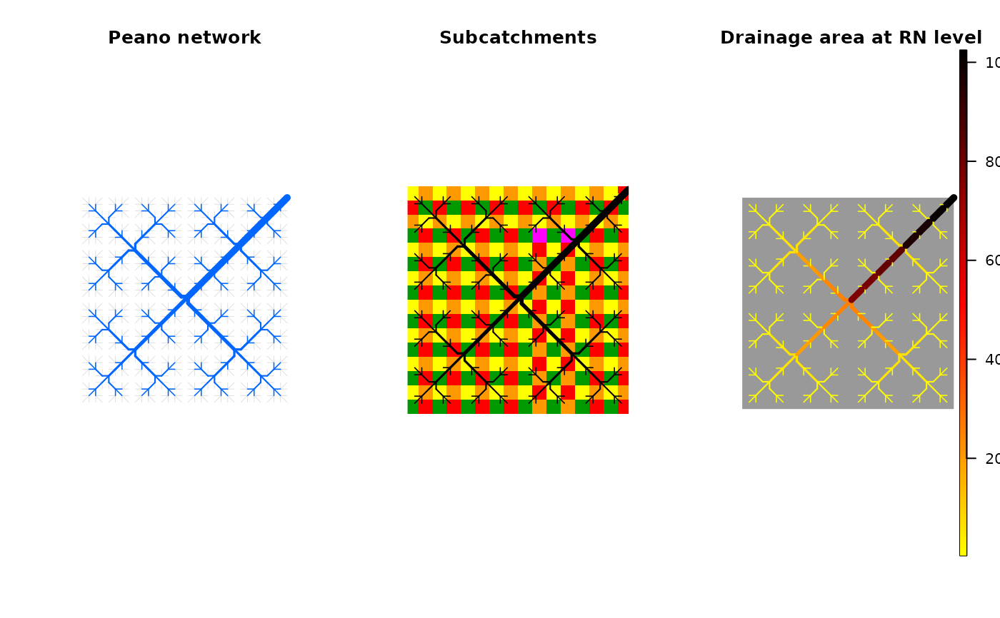

Create Peano network
create_peano.RdFunction that creates Peano networks on a square lattice.
Arguments
- nIterPeano
Number of iteration of the Peano scheme. The resulting network will span a domain of size
2^(nIterPeano + 1)by2^(nIterPeano + 1).- outletPos
Corner where the outlet is located, expressed as intercardinal direction. Possible values are
"NE","SE","SW","NW".- xllcorner
X coordinate of the lower-left pixel (expressed in planar units).
- yllcorner
Y coordinate of the lower-left pixel (expressed in planar units).
- cellsize
Size of a pixel (expressed in planar units).
Value
A river object that contains the same objects as those produced by create_OCN.
As such, it can be used as input for all other complementary functions of the package.
Examples
# 1) create a peano network in a 32x32 square,
# use landscape_OCN, aggregate_OCN functions,
# and display subcatchment map and map of drainage area
peano <- create_peano(4)
peano <- aggregate_OCN(landscape_OCN(peano), thrA = 4)
old.par <- par(no.readonly = TRUE)
par(mfrow=c(1,3))
draw_simple_OCN(peano)
title("Peano network")
draw_subcatchments_OCN(peano)
title("Subcatchments")
draw_thematic_OCN(peano$RN$A, peano)
title("Drainage area at RN level")

par(old.par)